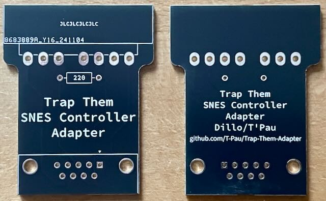
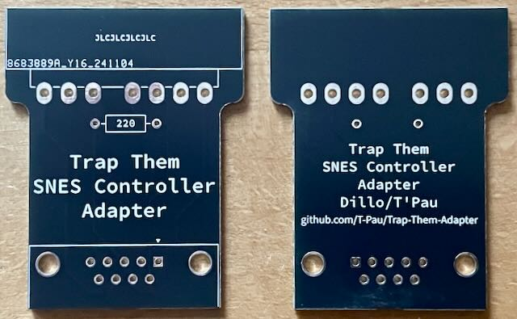
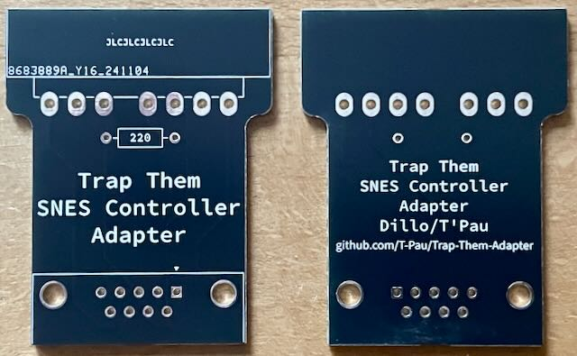

Ich habe die Platine aufgebaut und getestet.

Adapter für SNES Kontroller auf Trap Them Kontroller.
| Komponente | Anzahl | Preis | Anbieter |
| Platine | 1 | €1.00 | |
| 220Ω Widerstand | 1 | €0.04 | Reichelt |
| M2 Schraube | 2 | €0.76 | Conrad |
| M2 Mutter | 2 | €0.86 | Conrad |
| 90° D-Sub-9 Buchse | 1 | €0.35 | Reichelt |
| 90° SNES Controller Buchse | 1 | €2.64 | AliExpress |
| nur Platine | €1.00 | ||
| Bausatz | €5.65 |